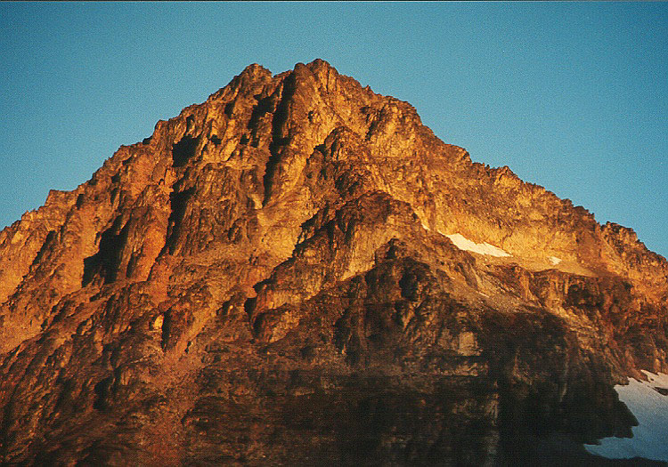
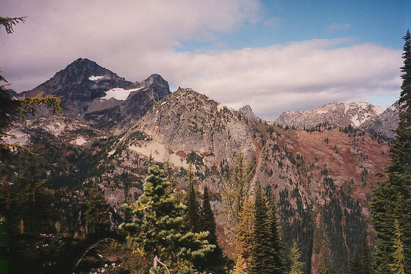
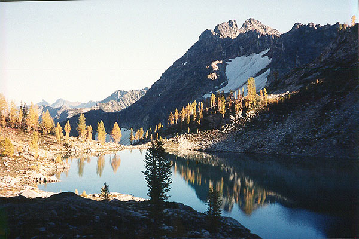
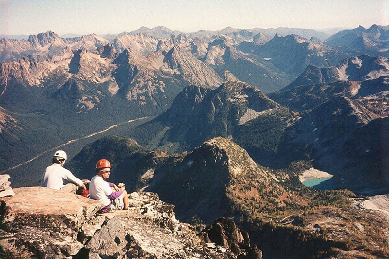
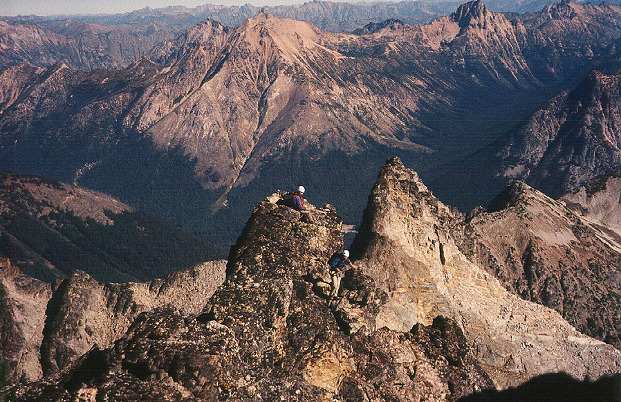
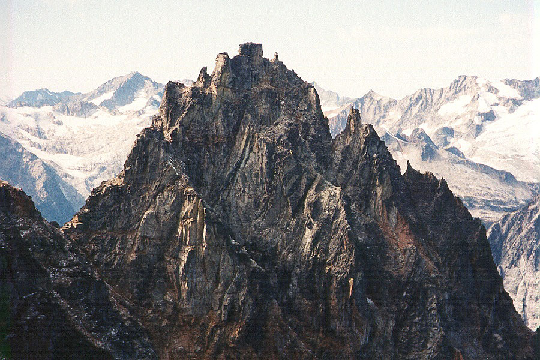
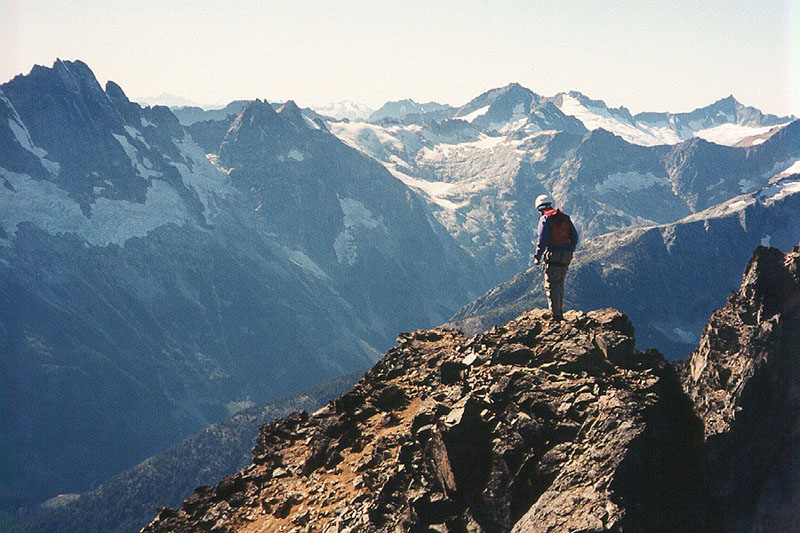
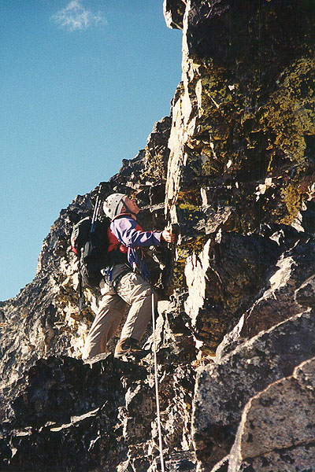

Black Peak, Northeast Ridge
Well, this was to be our last overnight trip of the season, and we wanted it to be a fun one. The nights are getting colder, and traces of snow are starting to appear on north faces. Something on our list has been the Northeast Ridge of Black Peak, which offers 1000 feet of ridge scrambling high above surrounding valleys. Steve and Josh drove up from Portland, and we got off to a late start. I spilled milk in Steve’s car, crying bitterly. We reached the trail-head at Rainy Pass sometime after 10 am. The approach for this climb is ridiculously easy, and we thought about other things to do this afternoon.
Following the trail up switchbacks in forest, we came to an unmarked junction, almost choosing the wrong way (go right!). Soon we contoured above Lake Ann, watching a man lazily circle the lake in a raft. The lake has an inviting little island near the center. We came to Heather Pass, and had great views of our mountain at the head of the next valley. We wanted to climb Corteo Peak today, and decided to do it from the Lewis Glacier further up. So we marched down the boulder-field, missing any helpful bits of trail (it always takes the way back to find the trail!), and being careful against ankle injuries. We all had the lightest hiking boots we owned.
Clouds were coming in, and light drops of rain fell as we headed up a ridge path near Lewis Lake. Eventually, the trail ended, and we continued on game paths to cliffs and steep, brushy slopes. Yes, we lost the trail again! But Steve gamely led us down from the cliffs, and across some brush to a hidden valley with ancient campsites. It appeared to have been very popular once, with rusted tin cans from the 1940s. We continued up a draw, then turned left to gain a ridge below the Lewis Glacier moraine. Weird bits of twisted metal began to appear, along with a geology student named Gary. He determined we were looking at the remains of a very wrecked helicopter. Sure enough, big pieces began to appear as we climbed, including a large door with the word “ARMY” on it.
Gary took off for higher ground and we looked at our proposed route up Corteo. The clouds were blocking any peaks above 7500 feet, and this dampened our enthusiasm. We definitely wanted to be fresh and ready for Black Peak in the morning, so we decided not to go. Continuing on to Wing Lake, we had a mix of choice campsites to pitch the tent. We had brought some great dinners, and Josh had playing cards and a book. We were in for a fun evening!
Having set up the tent, we decided to hike up to the base of the route, and see if we could leave crampons and ice ax back at the tent. Wandering up, we crossed a creek, then climbed heather and scree slopes to the glacier. At this time of day, it was easily walked. We heard hammering on the cliffs, and finally realized it was Gary (the geologist). We met up with him and went on a hike down a spur ridge on the right side of the peak. We had excellent views into the next valley to the north. He was taking samples from rocks all around here, a job that took the entire summer.








There were also some wild cliffs and gullies in this unnamed valley. We couldn’t resist trundling a few rocks down a long, steep chute. We got back to camp by descending steep heather to a bench below the glacier. Once there, we cooked our excellent dehydrated meals, and drank hot chocolate as the stars came out. When the moon emerged, it was painfully bright! I retreated into the tent and read Josh’s book. Black Peak looked ominous bathed in moonlight.
Morning came, and we quickly got ready for the climb. Hiking up, we passed a party on the glacier, making fast time with crampons (you could probably get away without them, but the ice got steeper near the start of the route). With this party right behind, we scrambled up loose ledges to the ridge. The quality of the rock to this point was not inspiring! At a notch we got our first views of the north side of the peak, with a very crevassed glacier, and Grizzly Creek heading away in a deep valley. The shaded right side of the ridge was dusted in snow. As we climbed we would occasionally venture to that side - much colder but the rock was often better. I continued scrambling another rope length until the ridge steepened and we needed to climb about 100 feet to gain the crest. We roped up with our single 60 meter rope, and I started off, straight up moderate terrain, then following the crest. Josh was in the middle, and Steve behind. We were all pretty new to simul-climbing, but it is the best way to cover ground quickly on a long ridge like this. I tried to keep several pieces of gear on the rope at all times, and sometimes this was challenging. The party behind us began belaying near the start of the ridge. Later we found they had turned back, not ready for the loose rock and exposed terrain.
I ran out of gear and set a belay on the ridge. I might have gone farther, but I didn’t want to be short of gear at the upcoming steep area. Steve took the next lead, on loose 5th class terrain. He climbed quickly, then belayed Josh and I up. Josh took a detour up a loose overhang. When I got there I balked at the danger! Steve paid out some slack and I went around the mess. Generally, the ridge is safe but there are some areas where you could pull an avalanche of crumbles down! From here we kept going, another simul-pitch for me to a cold notch. Steve took us out to a flat area, and I took us for two pitches to the base of a near-vertical wall. The lake and trees below were getting very small, and still our ridge continued up. Steve overcame the wall, and Josh and I followed. From here we had a long simulclimb starting from a snowy face on the north side. Mostly, we walked and scrambled over the false summit, then down to a notch. At the true summit, we found a cairn that seemed to indicate “go up.” I did, but because of a pretty hard move, I belayed Josh and Steve. We reached the summit just as another party did. They had avoided this hard move around to the right.
Congratulations to all! We looked around at everything, from Dome and Glacier Peaks, to Stuart and Rainer, to the black wall of Goode across the valley. We could see Forbidden and Boston Peaks, a jumble of rock and snow in the Pickett Range (the McMillan Spires were especially prominent), lonely Jack Mountain, and Silver Star to the east. We could see Mesahchie where Steve, Chris and I had climbed a month before. The impressive view of the West Peak had us planning to come back for another climb. I devoured a dozen cookies I had been stealing from Steve, and we soaked in the sunshine for about a half hour. We were very happy with the climb, and just hoped the descent wouldn’t detract too much from it!
Getting down was a little tricky, without knowing the easiest way. Finally we headed south on the summit ridge, then down a series of ledges on the left to a relatively flat area. We stayed roped and I placed gear as we down-climbed. After this 100 foot step, we saw by cairns and boot tracks that we had trail, so we put the rope away. Following the well-defined trail past several gullies, we were amazed at how easy this was! Compare these “class 3” gullies to the “class 3” descent from Mesahchie and you have a very big difference! Eventually we ran into a few hikers going up, and offered encouragement. Leaving gullies for a black rib, we kept going, and were soon at a saddle. Straight down steeper trail here, and we were in some great scree-skiing terrain for about 700 feet. Then the rocks became larger and awkward, and we continued more slowly down to Wing Lake. I went ahead alone to break down the tent. Traversing to the left off the big, awkward boulders, I found some more scree terrain. Soon I was down, marveling at the beauty of the lake. Steve and Josh were red and blue dots in the huge rock bowl.
At camp I packed up, soon met by Steve and Josh. We finished that chore, ate some more, and hiked out. We stayed on the trail to Lewis Lake, having an easier time. Around 6 pm we started up the boulder-field to Heather Pass, enjoying the trip because (once again) we found and kept the faint trail that used every patch of dirt/forest ground that could be pieced together. At the pass, we had a stunning sight: the moon rising behind a distant mountain. As we watched, it rose in the pink and blue sky, very large on the horizon. This vision kept us occupied as we descended above Lake Ann, into deep forests. This time I was the last to get the headlamp out, but I finally gave in. Before we knew it, we were at the car, which smelled like sour milk.
This is a shout-out to my homies Steve and Josh. “Word!”